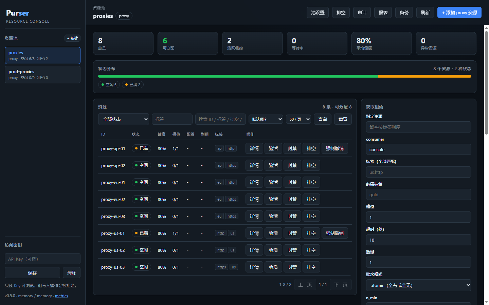
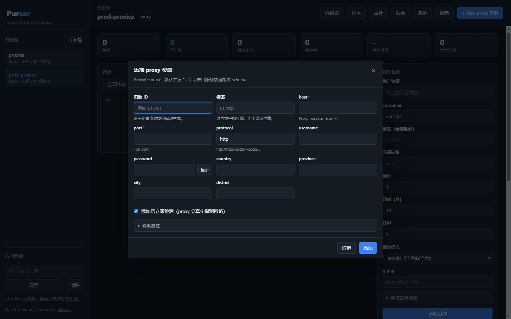
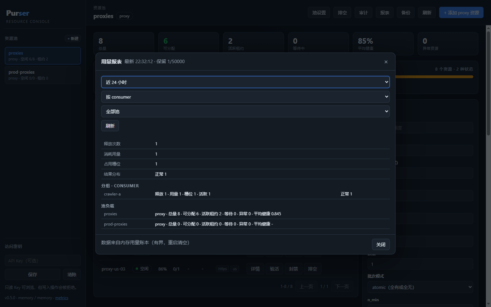

Web 控制台¶
purser serve 自带 Web 控制台，覆盖建池、加资源、获取/归还租约、验活、审计、报表与备份。控制台与 CLI、REST 共用同一套 API，不是另一条写入路径；自动化任务仍建议直接调用 REST。

打开与鉴权¶
浏览器打开 http://127.0.0.1:8000/。左栏底部的 访问密钥 用于填写 PURSER_API_KEY 或 PURSER_READONLY_KEY：
- 密钥保存在浏览器
localStorage，刷新后仍在；清除 只删除本地副本。 - 只读 Key 可以浏览全部面板，但添加、排空、撤销等写操作会被服务端拒绝。
- 左栏底部同时显示当前
storage · coordination · metrics组合，排障时先确认它是否符合预期。
不配密钥等于完全开放
同时未设置 PURSER_API_KEY 与 PURSER_READONLY_KEY 时，服务按匿名 admin 处理，任何能访问端口的人都能下载包含明文密钥的备份。对公网或共享网络暴露前，务必配置密钥或加反向代理鉴权。见 配置参考。
界面分区¶
| 区域 | 内容 |
|---|---|
| 左栏 | 资源池列表、新建资源池、访问密钥、服务信息 |
| 顶栏 | 池设置、排空、审计、报表、备份、刷新、添加资源 |
| KPI | 总量、可分配、活跃租约、等待中、平均健康、异常资源 |
| 状态分布 | 按 12 个状态统计的色条，鼠标悬停查看状态与数量 |
| 资源表 | 状态/标签/关键词筛选、健康分与最近使用排序、分页与行内操作 |
| 右栏 | 获取租约、活跃租约、导入批次、SSE 事件流、指标快照 |
资源表的行内操作：
- 详情：查看字段、调度属性、活跃租约与健康样本，可编辑普通字段。
- 验活：同步探测一次，结果写入事件流与健康分。
- 封禁 / 解封：封禁后不参与分配，解封时间由
unban_after与unban_mode决定。 - 排空 / 撤销排空：排空只停止新分配，存量租约归还后归档。
- 强制撤销：撤销该资源的一条在途租约；资源仍被其他租约占用时可再次点击。用于事故处置。
- 恢复：仅归档资源显示，恢复后会立即验活。
建池与改配置¶
新建资源池时池名与资源类型必填，其余都可以留空。适配器决定资源表单字段，创建后不可修改。
“场景预设 profile（仅创建时）”是可选起点（basic / validated / shared / long_running / quota / random / one_shot），基础脚本不需要选择。预设与显式字段冲突时，显式字段覆盖预设。
“调度与运行参数”由 GET /config/schema 动态生成，覆盖部署、分配、租约、隔离、验活与保留等全部池配置。storage、coordination、secret_fields、event_queue_size、schema_version 只能在建池时指定，编辑时会锁定；其余字段可在 池设置 中热更新。多实例部署应选 sqlite/mysql + redis。
编辑池时，留空表示保持原值；可空字段勾选“清除”才置空。布尔字段是三态控件，未选择时不会覆盖 profile 或原值。弹窗字段直接来自服务端 schema，占位符只是默认值提示；完整字段、预设与热更新限制见 配置参考。
添加资源¶

资源表单由服务端适配器 schema 生成：required 字段标红星，secret 字段默认掩码并可点“显示”；自定义适配器注册了什么字段，这里就出现什么字段。
“调度属性”可覆盖单条资源的 max_slots、usage_quota、quota_limit、expires_at、next_available_at、mutex_group、可用时段、priority 与 preference；priority 供 static_priority 分配器使用，preference 是偏好加分。编辑资源时同样可修改这两项并显式清除。“自定义字段 JSON”合并进资源载荷，已由表单填写的键以表单为准。
默认勾选 添加后立即验活。对 proxy 类型会发起真实网络探测；导入大量资源并开启验活前，先确认出口网络可用，否则会成批进入隔离。
控制台只做单条添加；批量导入用 purser import 或 POST /pools/{pool}/resources，导入与验活规则见导入与验活。
获取与归还租约¶
右栏“获取租约”支持标签调度、指定资源、consumer、必需标签、槽位、超时与数量。一次取多个时：
atomic：全部成功才返回，否则整体失败；best_effort：凑够n_min即返回，余下的尽力补齐。
高级参数包括 priority、use_limit、probe、trace_id、目标站点、Idempotency-Key、allow_duplicate 与 ignore_cooldown。字段含义与冲突规则见 租约生命周期。
“活跃租约”可按 consumer 或资源 ID 过滤，单条归还时选择结果（正常、验证码、限流、封禁、超时等）并填写 used；“按 consumer 归还”会一次释放该调用方的全部租约。归还结果直接影响健康度、隔离与配额，见 公平性与健康度。
观察、审计与报表¶
- 事件流：未配置密钥时订阅当前池的 SSE，连接失败会自动回退到历史轮询；配置密钥后
EventSource无法携带Authorization，控制台直接从/events/history轮询。可按type或资源 ID 过滤，支持暂停与清空。 - 指标：展示
/metrics/snapshot的计数器与直方图，用于快速定位分配失败、验活失败与延迟分布。 - 审计：“校验链”调用
/audit/verify验证 append-only 哈希链；可按池、动作、资源、操作者过滤并向前翻页。 - 报表：按 1 小时 / 24 小时 / 7 天 / 全部保留统计，可按
consumer、目标站、池或类型分组。

报表来自有界内存账本，重启即清空；需要长期留存时定时拉取 /reports/usage 落库，具体字段见 Reports。
备份 / 恢复 弹窗可下载全量 JSON 或上传恢复：备份包含明文密钥，只应保存在受控位置（见安全模型）；恢复不迁移在途租约，占用态资源会回到空闲；skip / overwrite 决定同名池的处理方式。
与控制台之外的分工¶
| 场景 | 建议入口 |
|---|---|
| 临时加一条资源、看状态、手动归还 | Web 控制台 |
| 批量导入、定时任务、自动化脚本 | CLI 或 REST |
| 多实例部署与存储/协调配置 | 启动参数或环境变量，见多实例部署 |
| 强制操作与审计追溯 | 控制台或 /audit，见运维操作 |
控制台不替代监控：进程健康、就绪与存储/协调状态仍应通过 /healthz、/readyz、/service 接入现有告警体系。